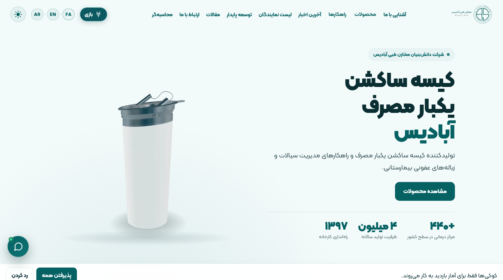
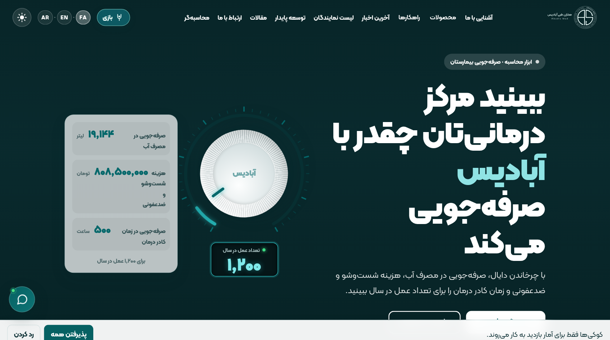
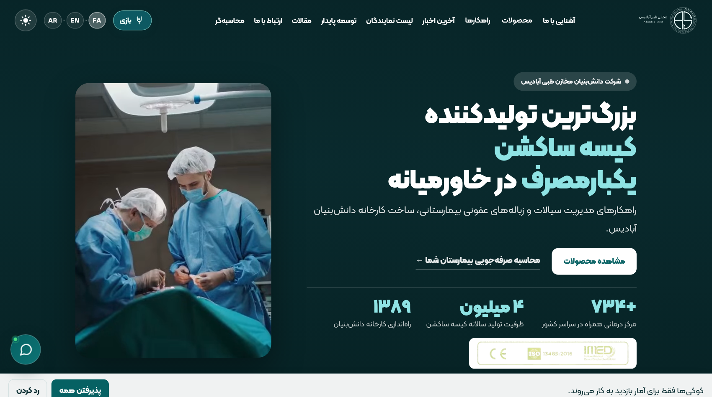
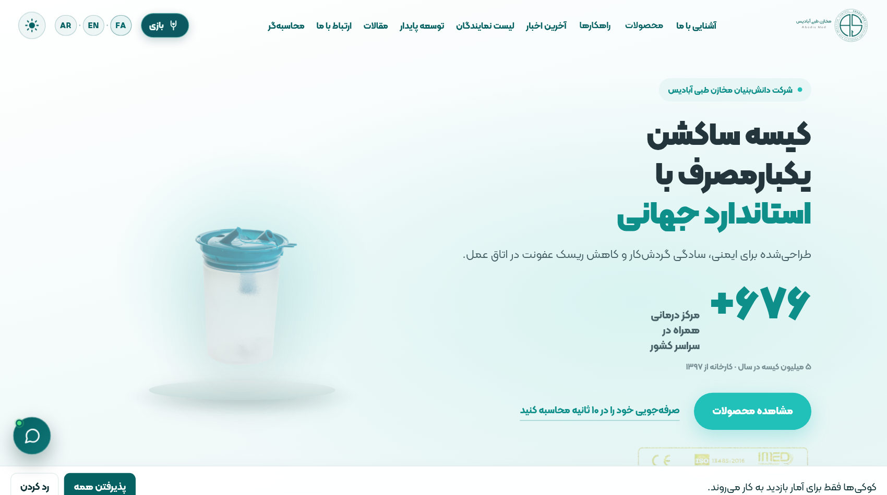
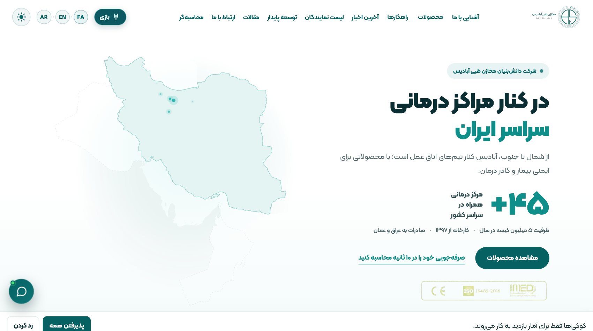
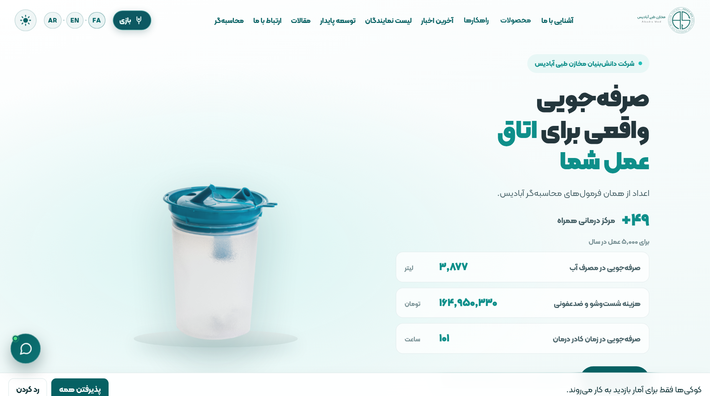
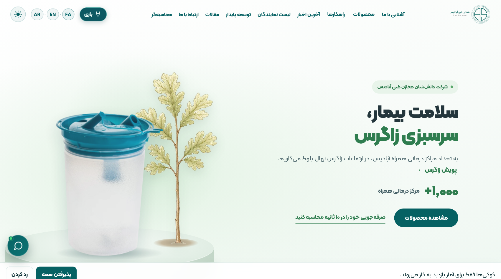
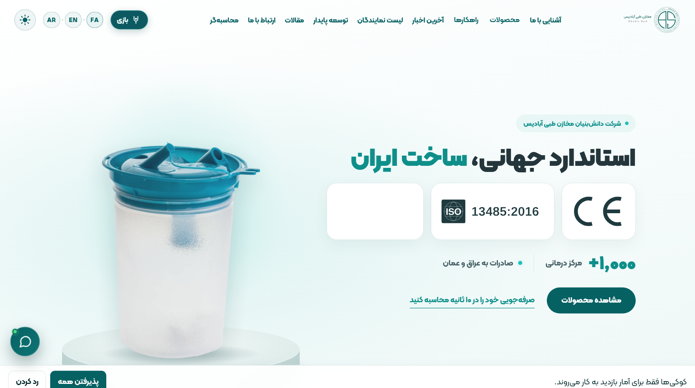

رفع خطای ۴۰۴ لینک قبلی · با کلیک روی هر کارت، صفحه کامل و تعاملی همان گزینه باز میشود

تمرکز روی کیسه ساکشن و خانواده محصولات در کادر تمیز Serres
مشاهده زنده گزینه 1 ←
دایال چرخان مهندسی با نمایش زنده شاخصهای عملکرد
مشاهده زنده گزینه 2 ←
تایپوگرافی درشت آمارهای کلیدی ۱٬۲۹۴ مرکز و ۹۸.۹۹٪ رضایت
مشاهده زنده گزینه 3 ←
چیدمان استودیویی مینیمال محصول در فضای بیمارستانی آرام
مشاهده زنده گزینه 4 ←
نقشه پوشش سراسری مراکز درمانی در همان نگاه اول
مشاهده زنده گزینه 5 ←
ورود مستقیم با محاسبهگر صرفهجویی اقتصادی و محیطزیستی
مشاهده زنده گزینه 6 ←
پیوند مستقیم هر کیسه ساکشن با کاشت نهال بلوط در زاگرس
مشاهده زنده گزینه 7 ←
تمرکز بر کیفیت دانشبنیان، استاندارد CE و نرخ خرابی ۰.۰۰۱۸٪
مشاهده زنده گزینه 8 ←